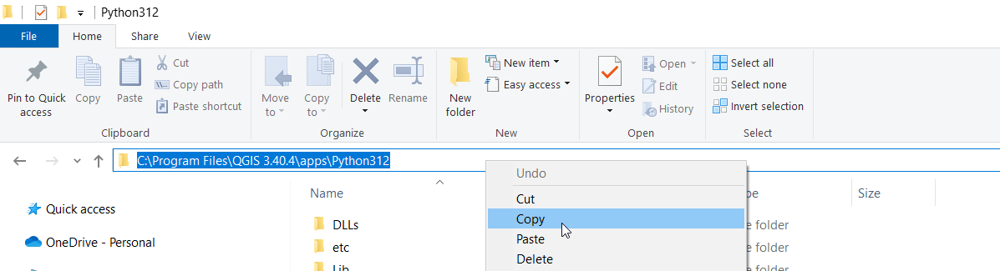
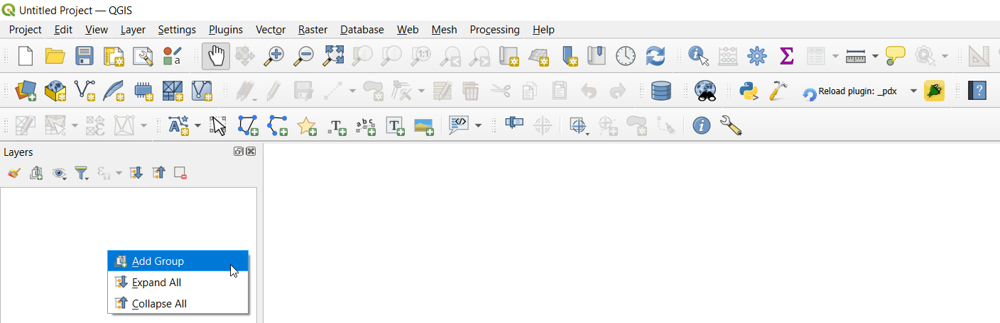
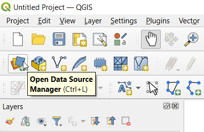
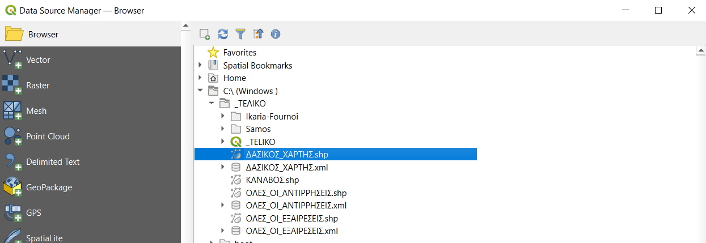
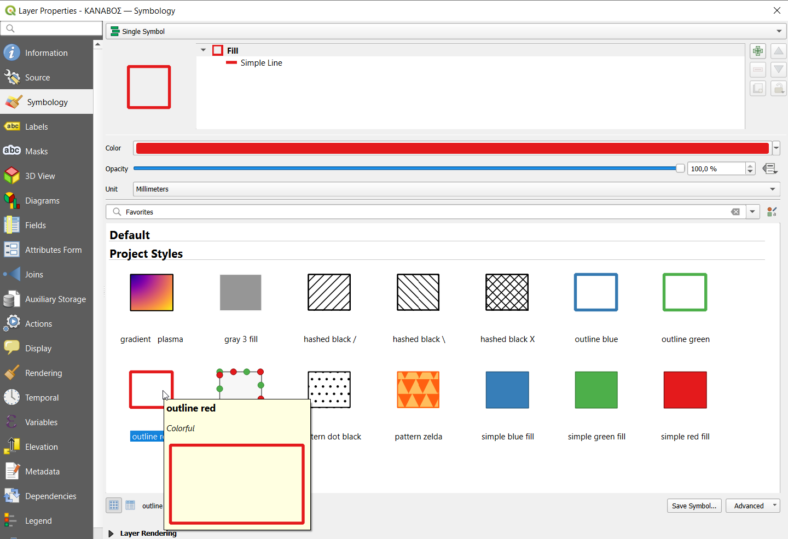
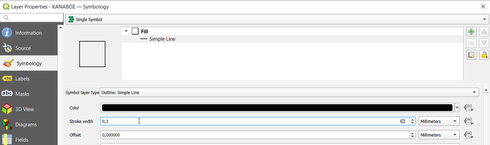
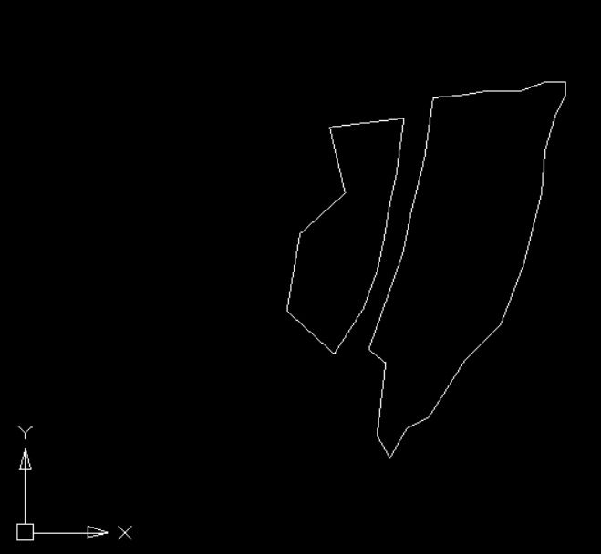
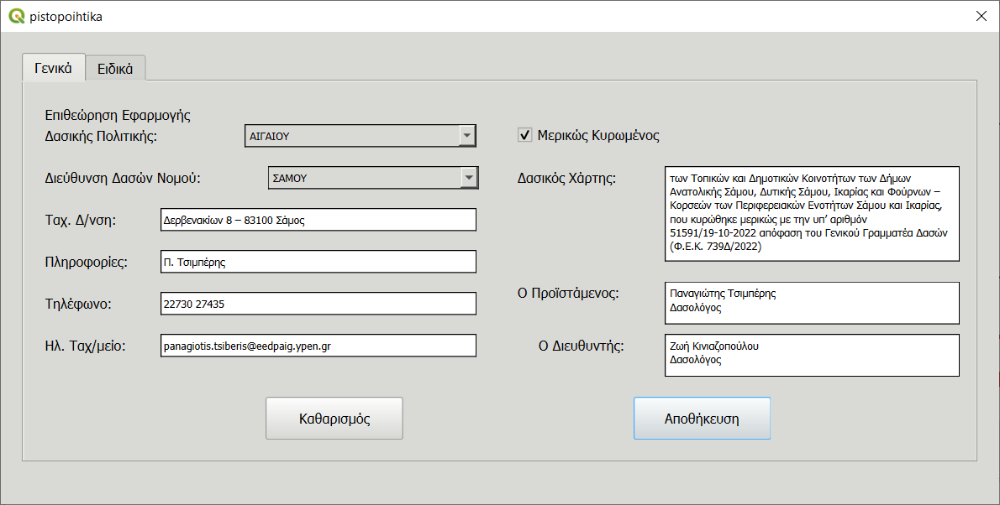
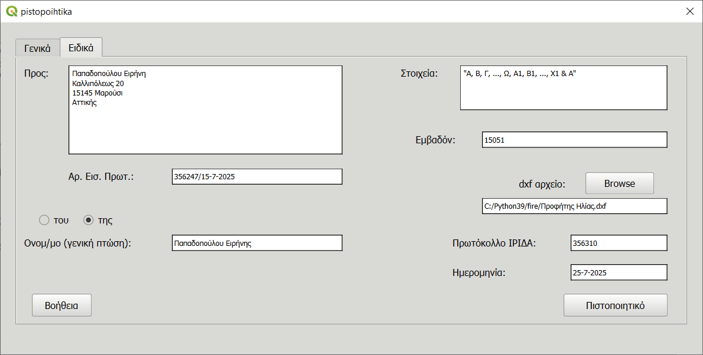
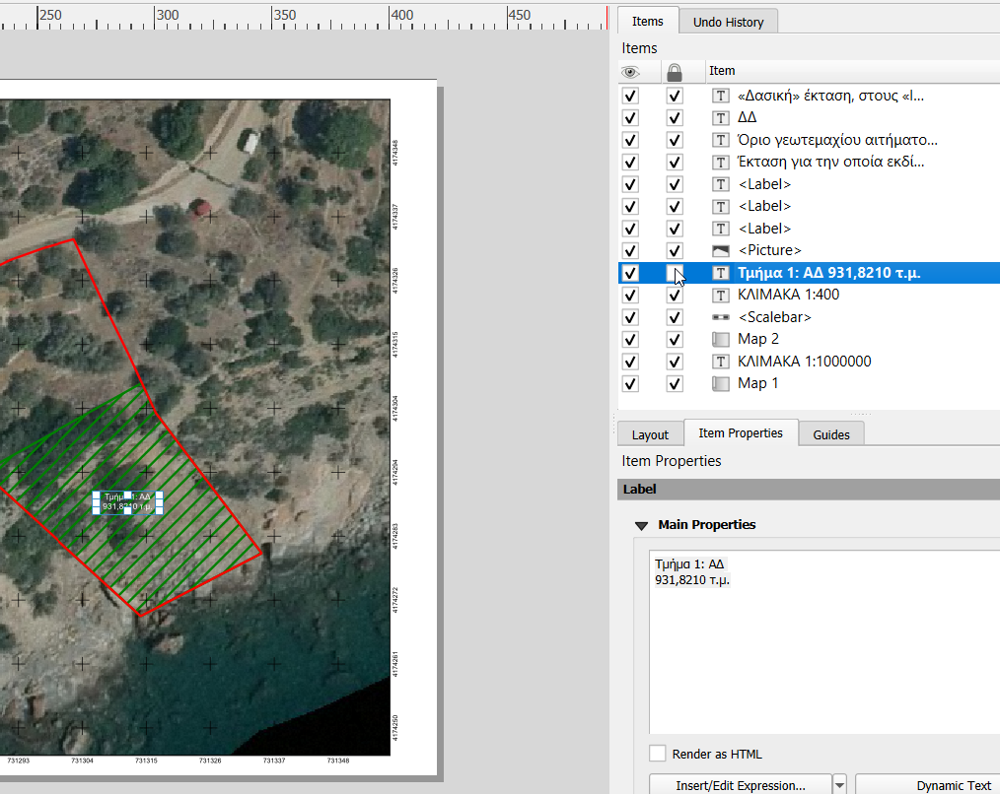

{kind=link}
{kind=link}

Αρχείο βοήθειας του προγράμματος (QGIS plugin) pdx
1. Εισαγωγή
Καλώς ήρθατε στην πρώτη έκδοση του προγράμματος pdx. Το πρόγραμμα αυτό δημιουργεί αυτόματα το πιστοποιητικό δασικού εν γένει χαρακτήρα (για μια αιτηθείσα έκταση) του άρθρου 20 του νόμου 3889/2010 όπως αυτός ισχύει, το απόσπασμα χάρτη που το συνοδεύει καθώς επίσης και μια απάντηση σε αίτηση όταν αυτή χρειάζεται να εκδοθεί. Απευθύνεται προφανώς στους δασικούς υπαλλήλους των τμημάτων δασικών χαρτών και όχι μόνο.
Η ανάγκη δημιουργίας αυτού του προγράμματος προέκυψε από το γεγονός ότι πολλές φορές οι αιτήσεις γι αυτά τα πιστοποιητικά πέφτουν σαν βροχή στην Υπηρεσία κι έτσι πάνε πίσω οι υπόλοιπες (ουκ ολίγες) δουλειές.
Και από τη στιγμή που υπάρχει πλέον πολύ καλό και ελεύθερο λογισμικό για να υποστηρίξει αυτή την εργασία, πιστεύουμε ότι αξίζει τον κόπο να γίνει μια προσπάθεια προς αυτή την κατεύθυνση.
2. Στήσιμο του προγράμματος
α) Αναγκαίο λογισμικό
Υποθέτουμε ότι δουλεύουμε σε περιβάλλον windows 10 (λογικά και σε 11). Για να τρέξουμε το πρόγραμμα pdx και να λειτουργήσει αυτό θα πρέπει καταρχήν να έχουμε QGIS και συγκεκριμένα την έκδοση 3.40 – κατεβάστε την από εδώ.
Επίσης για τις λειτουργικές ανάγκες μας σε CAD περιβάλλον θα χρειαστούμε το NanoCAD και συγκεκριμένα την έκδοση 5.0 που την κατεβάζετε από εδώ - θα χρειαστεί να κάνετε register.
Η βιβλιοθήκη python-docx είναι και αυτή αναγκαία – θα μιλήσουμε σε λίγο γι αυτήν.
Άλλα resources που θα χρειαστούμε είναι το Ελληνικό εθνόσημο και το σύμβολο του βορρά (από το https://openclipart.org/) - σας παρέχονται εδώ και εδώ αντίστοιχα – κατεβάστε τα και σώστε τα στον φάκελο των εγγράφων (Documents).
Το ίδιο το pdx που είναι ένα QGIS plugin δηλαδή ένα βοηθητικό πρόγραμμα για μια συγκεκριμένη εργασία, σε γλώσσα python.
β) Η εγκατάσταση...
...των προηγούμενων προγραμμάτων είναι σχετικά απλή – ακολουθούμε τις οδηγίες.
Θα σταθούμε στην εγκατάσταση του python-docx module. Αυτή θα γίνει μέσα από το περιβάλλον του QGIS και θα πρέπει να την κάνετε εσείς χειροκίνητα. Πάτε λοιπόν στο QGIS και πατήστε:
Plugins => Python Console
Μέσα τώρα στην κονσόλα της python γράψτε (δίπλα από το >>>):
import sys – πατήστε enter
import subprocess – πατήστε enter.
Στη συνέχεια θα βρείτε το python executable αρχείο του QGIS. Στην εξερεύνηση των Windows πάτε στο C: => Program Files και βρίσκετε τον φάκελο του QGIS. Ας υποθέσουμε ότι αυτός είναι ο QGIS 3.40.4 οπότε μπαίνετε εκεί και βρίσκετε τον φάκελο apps. Κλικ και σε αυτόν τον φάκελο και εκεί θα βρείτε τον φάκελο της python που ας υποθέσουμε ότι αυτός είναι ο Python312. Μπείτε εν τέλει και σε αυτόν τον φάκελο και τέλος κλικ στη γραμμή διευθύνσεων του Windows Explorer και μετά δεξί κλικ και αντιγράψτε τη γραμμή διεύθυνσης:

Πίσω πάλι στην κονσόλα της python και εισάγετε:
python_exe = r"
αμέσως μετά πατήστε <ctrl-V> για να κάνετε επικόληση αυτού που αντιγράψατε και τέλος πάλι μία απόστροφο ".
θα σχηματιστεί κάτι τέτοιο:
python_exe = r"C:\Program Files\QGIS 3.40.4\apps\Python312" – πατήστε enter
τέλος εισάγετε:
subprocess.check_call([python_exe, "-m", "pip", "install", "python-docx"]) και πατήστε enter – εννοείται ότι έχετε πρόσβαση στο internet.
Για να κάνετε έλεγχο της σωστής εγκατάστασης εισάγετε στην κονσόλα:
import docx – enter
print(docx.__version__) – enter
αν η python εκτυπώσει κάτι σαν 1.1.2 (ή παρόμοιο) τότε είμαστε εντάξει.
Όσον αφορά το ίδιο το pdx plugin, στο QGIS πατήστε Plugins => Manage and Install Plugins και στην μπάρα που γράφει Search… πληκτρολογήστε pdx φροντίζοντας στο αριστερό μενού να είναι επιλεγμένο το All. Κάτω δεξιά πατήστε Install Plugin.
γ) Απαραίτητη προϋπόθεση για να δουλέψει το πρόγραμμα...
...είναι να δημιουργήσετε πρώτα ένα document που θα φορτώνετε κάθε φορά που ανοίγετε το QGIS. Θα χρειαστείτε:
Ολόκληρο τον κυρωμένο δασικό χάρτη της επικράτειάς σας (με την κανονική του τη δομή – όπως ακριβώς δηλαδή είναι διαθέσιμος στα ανοιχτά δεδομένα). Θα έχει το όνομα “ΔΑΣΙΚΟΣ_ΧΑΡΤΗΣ”.
Ολόκληρο το dissolved αρχείο των αντιρρήσεων του δασικού χάρτη της επικράτειάς σας. Θα έχει το όνομα “ΟΛΕΣ_ΟΙ_ΑΝΤΙΡΡΗΣΕΙΣ”.
Παρομοίως το (dissolved) αρχείο των εξαιρέσεων ανάρτησης του δασικού χάρτη της επικράτειάς σας. Θα έχει το όνομα “ΟΛΕΣ_ΟΙ_ΕΞΑΙΡΕΣΕΙΣ”.
Τον κάναβο του δασικού χάρτη της επικράτειάς σας. Θα έχει το όνομα “ΚΑΝΑΒΟΣ”. Αυτός είναι ουσιαστικά το πλαίσιο κάθε Α/Φ πρόσφατης λήψης.
Όλες τις εικόνες της πρόσφατης αεροφωτογράφησης της επικράτειάς σας μαζί με τα world αρχεία τους (σε οποιαδήποτε μορφή σας βολεύει – προσωπικά χρησιμοποιώ ECW εικόνες και αντίστοιχα τα world αρχεία είναι EWW.
Όλα τα παραπάνω αρχεία είναι της μορφής shapefile (εκτός από τις εικόνες βέβαια) και σας τα προμηθεύει το τμήμα δασικών χαρτών. Σώστε τα σε ένα μέρος της αρεσκείας σας και προχωράμε. Ανοίγουμε το QGIS, πατάμε Project => New και ευθύς αμέσως πατάμε Project => Properties. Στη καρτέλα που θα βγει πατάμε το CRS και στην μπάρα Filter γράφουμε 2100. Από αυτά που θα προτείνει επιλέγουμε το EPSG:2100 – GGRS87 / Greek Grid.
Δεξί κλικ τώρα στην αριστερή μπάρα του QGIS και επιλέγουμε Add Group:

Μετονομάστε την ομάδα (group) σε SHAPES και στη συνέχεια προσθέστε ακόμη μια ομάδα που θα ονομάσετε RASTERS.
Στη συνέχεια επιλέξτε το SHAPES και πατήστε το Open Data Source Manager:

στην καρτέλα που θα βγει επιλέξτε Browser πάνω αριστερά:

και στη συνέχεια πλοηγηθείτε εκεί που έχετε αποθηκεύσει τα shapefiles και ένα ένα (με διπλό κλικ στα *.shp) τα προσθέτετε στο group.
H ίδια διαδικασία επαναλαμβάνεται με τις εικόνες: επιλέγετε το RASTERS group και πλοηγηθείτε εκεί που έχετε αποθηκευμένες τις εικόνες και τα world αρχεία (τα τελευταία πρέπει να έχουν το ίδιο όνομα πχ αν μια εικόνα έχει το όνομα 0726041625.tif τότε το world file θα έχει το όνομα 0726041625.tfw). Επιλέξτε όλες τις εικόνες και με δεξί κλικ πατήστε το Add Selected Layers to Project. Τέλος κάντε δεξί κλικ στα δύο group και επιλέξτε Set Group CRS… και κατά τα γνωστά EPSG:2100 – GGRS87 / Greek Grid.
Για να είναι έτοιμο το document κάντε διπλό κλικ στο shapefile του κανάβου και στην καρτέλα με τα Layer Properties πατήστε αριστερά στο Symbology και στη συνέχεια ως Project Style διαλέξτε outline red:

στην ίδια καρτέλα (στην πάνω μεριά) πατήστε εκεί που λέει Simple Line και αλλάξτε το χρώμα (Color) σε μαύρο και το Stroke width σε 0,3:

κλείστε
την καρτέλα με
τα Layer
Properties και
πηγαίνετε Project
=> Save As και
σώστε το έγγραφο (document)
που
μόλις φτιάξατε. Έχετε τώρα ένα QGIS
document που
θα το ανοίγετε με το Project
=> Open… κάθε
φορά που θα θέλετε να φτιάξετε ένα
πιστοποιητικό δασικού χαρακτήρα!
3. Δουλεύοντας το πρόγραμμα
α) Το dxf αρχείο
Τις εργασίες που κάνατε έως τώρα δεν χρειάζεται να τις επαναλαμβάνετε κάθε φορά που θέλετε να δουλέψετε. Από εδώ και πέρα το μόνο που σας ενδιαφέρει είναι να έχετε στην κατοχή σας ένα “σωστό” dxf αρχείο.
Και καταρχήν τί είναι αυτό το dxf αρχείο; Αυτό είναι μια ανοιχτή μορφή (format) CAD αρχείων της Autodesk. Το QGIS και το NanoCAD μπορούν και δουλεύουν μ’ αυτήν τη μορφή οπότε είμαστε εντάξει. Οι περισσότεροι βέβαια από εμάς ξέρουμε τα dxf αρχεία από το AutoCAD και από την εφαρμογή του Κτηματολογίου. Ζητήστε λοιπόν (από τον πολίτη που έκανε την αίτηση ή από τον μηχανικό του) το αρχείο dxf της αιτηθείσας έκτασης. Όχι τον πίνακα συντεταγμένων αλλά το dxf. Κι αυτό γιατί οι συντεταγμένες συνήθως δεν μας δίνονται με όλα τα δεκαδικά τους και ως εκ τούτου μπορεί να προκύψουν μικρά πολύγωνα (φλύδες) που δεν θα έπρεπε να υπάρχουν. Τώρα βέβαια αν ο πολίτης έχει μόνο μια θέαση στην κατοχή του χωρίς τοπογραφικό και χωρίς να υπάρχει μηχανικός τότε δεχόμαστε αυτή.
Πάμε τώρα στο “σωστό” dxf αρχείο. Τί εννοούμε όταν το λέμε αυτό. Ένα “σωστό” λοιπόν dxf αρχείο (για τις ανάγκες του προγράμματος πάντα):
Είναι σε format *.dxf 2000 – όχι παραπάνω.
Περιέχει μία (ή και περισσότερες) κλειστή/ές (closed) polyline με το περίγραμμα/ματα της έκτασης:

Αν η polyline δεν είναι κλειστή τότε επιλέξτε την και κάτω αριστερά στην οθόνη εκεί που γράφει Closed πατήστε Yes. Επίσης μια άλλη συνηθισμένη “πρακτική” είναι το dxf αρχείο να περιέχει όχι μία polyline αλλά δύο (σπάνια περισσότερες) πανομοιότυπες, τη μία πάνω απ’ την άλλη, polylines οπότε πατάμε Zoom => Extents μετά <ctrl> + a και αν πάνω αριστερά στο Object type εμφανίζει από δίπλα Polyline (2) ενώ το εμβαδόν (Area) είναι ίδιο τότε έχουμε διπλότυπο. Σβήστε τη μία.
Εκτός από την polyline δεν περιέχει τίποτε άλλο. Ούτε points (σημεία), ούτε arcs (τόξα), ούτε line(segments) (ευθύγραμμα τμήματα) κτλ. Στο NanoCad πατήστε Zoom => Extents και άμα εξαφανιστεί η εικόνα τότε πατήστε undo (ή <ctrl> + z) για να πάτε ένα βήμα πίσω και επιλέξτε την (ή τις) polyline στη συνέχεια Edit => Copy , ανοίξτε νέο αρχείο και μετά Edit => Paste to Original Coordinates. Τέλος σώστε το αρχείο ως dxf2000 σε φάκελο και όνομα της αρεσκείας σας. Στο εξής θα δουλεύετε μ’ αυτό. Την αυτή διαδικασία ακολουθήστε και όταν το dxf αρχείο περιέχει πολλά layers. Μην μπλεχτείτε με το να σβήνετε ένα σωρό γραμμές του τοπογραφικού – απλά κάντε copy/paste to original coordinates την polyline(s) σε ένα ξεχωριστό αρχείο και τελειώσατε!
Αν η polyline σας έχει υψόμετρο διαφορετικό του μηδενός τότε κάντε το μηδέν. Επιλέξτε την και αριστερά στη μέση εκεί που γράφει Elevation θα πρέπει να είναι μηδέν – ή αλλιώς κάντε το εσείς μηδέν.
Επίσης έχω συναντήσει και την περίπτωση όπου το πρόγραμμα του μηχανικού παράγει μεν dxf αρχεία αλλά αυτά είναι ουσιαστικά άχρηστα – δεν υπάρχει μία polyline αλλά πολλά lines. Σ’ αυτήν την περίπτωση περάστε μια polyline πάνω από τα άκρα των lines γιατί το NanoCad 5.0 δεν φαίνεται να κάνει join εκτός κι αν τα lines είναι όλα μέλη μιας νοητής ευθείας. Και πέστε του μηχανικού να κατεβάσει το NanoCad 5.0!
Τέλος υπάρχει και η περίπτωση όπου το dxf αρχείο δεν ανοίγει καν λόγω χαρακτήρων που δεν μπορούν να διαβαστούν (invalid characters). Σ’ αυτήν την περίπτωση λέτε να σας στείλουν ξανά ένα dxf αρχείο το οποίο έχει δοκιμάσει και ο ίδιος ο μηχανικός να ανοίξει. Ή στην ανάγκη να σας στείλει το CAD αρχείο σε dwg(2010) format (του AutoCAD δηλαδή – τα ανοίγει το NanoCAD) και εν συνεχεία εσείς το σώζετε σε dxf(2000).
Όταν τελειώσετε τις εργασίες σας τότε σώστε το dxf (2000 πάντα) και κλείστε το NanoCad. Τώρα θα μου πείτε: “Καλά ρε φίλε, είναι δουλειά μας να μπλεχτούμε με τα dxf αρχεία? Άμα είναι σωστά τα δεχόμαστε, άμα δεν είναι μας τα ξαναστέλνουν.”. Σωστό είναι κι αυτό αλλά έτσι καθυστερούμε για μια δουλειά που διαρκεί το πολύ 5-10 λεπτά.
β) Το περιβάλλον εργασίας
Έχετε ετοιμάσει λοιπόν το “σωστό” dxf αρχείο και το έχετε σώσει με το όνομα και στο φάκελο που θέλετε. Να θυμάστε το φάκελο. Ανοίξτε τώρα το QGIS και στη συνέχεια το document που δημιουργήσατε νωρίτερα. Είστε έτοιμοι. Πατήστε το κουμπί του pdx. Θα ανοίξει το παρακάτω παράθυρο:

Εδώ βλέπουμε την καρτέλα Γενικά που θα συμπληρώσετε την πρώτη φορά που θα ανοίξετε το πρόγραμμα. Ξεκινήστε λοιπόν να συμπληρώνετε τα στοιχεία της καρτέλας – εδώ βλέπετε τα δικά μου. Από το πρώτο πτυσσόμενο μενού διαλέξτε την Επιθεώρηση που ανήκετε και στη συνέχεια τη δική σας Διεύθυνση Δασών. Τα υπόλοιπα τα συμπληρώνετε εύκολα ανάλογα όπως βλέπετε στην εικόνα. Να σταθούμε λίγο στον δασικό χάρτη. Αν η έκτασή σας βρίσκεται εντός μερικώς κυρωμένου δ.χ. τότε τσεκάρετε το Μερικώς Κυρωμένος και ανάλογα συμπληρώστε το κείμενο που περιγράφει τον δ.χ. όλου του νομού σας – σε γενική πτώση. Αν πάλι η έκτασή σας βρίσκεται εντός ολικού κυρωμένου δ.χ. ενός ΟΤΑ τότε αποεπιλέξτε το Μερικώς Κυρωμένος και ανάλογα συμπληρώστε το κείμενο που περιγράφει τον δ.χ. του συγκεκριμένου ΟΤΑ – σε γενική πάντα πτώση. Μόλις συμπληρώσετε τα στοιχεία της πρώτης καρτέλας (αλλά και κάθε φορά που θα κάνετε αλλαγές σ’ αυτήν) πατήστε Αποθήκευση.
Πάμε τώρα στη δεύτερη καρτέλα Ειδικά:

Συμπληρώστε καταρχήν την διεύθυνση του αιτούντα – όπως θα τη γράφατε στο πιστοποιητικό και στη συνέχεια τον αριθμό εισερχομένου πρωτοκόλλου (με την ημερομηνία) της αίτησης. Κατόπιν το φύλο (του ή της) και το ονοματεπώνυμο του αιτούντα σε γενική πτώση. Στο δεξί μέρος γράψτε τα στοιχεία της έκτασης όπως αναγράφονται στο τοπογραφικό (αν υπάρχει θέαση τότε γράφουμε κάτι σαν “0, 1, 2...45 & 0”). Έπειτα το εμβαδόν που αναγράφεται στο τοπογραφικό διάγραμμα. Προσπεράστε το dxf και πάμε στο πρωτόκολλο ΙΡΙΔΑ και στην ημερομηνία. Αυτά τα εκδίδουμε καταρχήν ανεβάζοντας στο ΙΡΙΔΑ ένα ψεύτικο (dummy) αρχείο μόνο και μόνο για να εκδώσουμε τον αριθμό πρωτοκόλλου – τον οποίο συμπληρώνουμε εδώ.
Αφού έχουμε συμπληρώσει όλα τα κουτάκια και βεβαιωθούμε ότι είναι σωστά, πατάμε το κουμπί που γράφει Browse και πλοηγούμαστε στον φάκελο που έχουμε σώσει το dxf αρχείο μας. Διπλό κλικ στο τελευταίο και έχουμε εισάγει τη διαδρομή του. Τέλος πατάμε το κουμπί Πιστοποιητικό.
γ) Το αποτέλεσμα (παράγωγα αρχεία)
Τα αρχεία που παράγει το pdx είναι
Το Πιστοποιητικό (*.docx) δασικού χαρακτήρα μαζί με τον Χάρτη (*.pdf) που το συνοδεύει. Αυτά βέβαια όταν η έκταση βρίσκεται εντός του κυρωμένου δασικού χάρτη.
Το Διαβιβαστικό (*.docx) που πληροφορεί τον πολίτη ότι π.χ. η έκτασή του βρίσκεται εκτός ανάρτησης του δ.χ ή ότι γι αυτήν εκκρεμούν αντιρρήσεις ενώπιον της ΕΠ.Ε.Α.
Επίσης μέσα στο φάκελο πάντα του dxf αρχείου και εκτός από τα παραπάνω θα σχηματιστούν και τα ανάλογα shapefiles. Αυτά μπορεί να είναι (όχι πάντα) τα εξής: Δασικά.shp, Αγροτικά.shp, Αντιρρήσεις.shp, Εξαιρέσεις.shp & Αντιρρήσεις_2.shp.
Ρίξτε μια ματιά στα docx αρχεία αν σας κάνουν (αν θέλετε να αλλάξετε μια λεπτομέρεια) ενώ αν θέλετε να αλλάξετε τον χάρτη θα πρέπει στο QGIS να πάτε Project => Layouts => My_Map_Layout και στο δεξί μέρος επιλέξτε πχ την ετικέτα που γράφει πχ “Τμήμα 1: ΑΔ
931,8210 τ.μ.” , μετά αποεπιλέξτε το πλαίσιο που κλειδώνει την ετικέτα:

και στη συνέχεια μετακινήστε την ετικέτα με το κέρσορα (θα γίνει σταυρόνημα) όπου θέλετε. Σώστε και πατήστε (στο παράθυρο του Layout πάντα) Layout => Export as Pdf… και έτσι δημιουργείτε το χάρτη της αρεσκείας σας.
4. Παράρτημα
α) Διάγραμμα ροής (από https://www.drawio.com/)
β) Λογισμικό που χρησιμοποιήθηκε
QGIS: https://qgis.org/
NanoCAD: https://nanocad.com/
Python: https://www.python.org/ & python-docx
Notepad++: https://notepad-plus-plus.org/
LibreOffice: https://el.libreoffice.org/
IrfanView: https://www.irfanview.com/
7zip: https://www.7-zip.org/
AI: https://deepai.org/ & Duck.ai
γ) Επίλογος
Το πρόγραμμα pdx είναι τελείως πειραματικό και δεν παρέχεται καμία εγγύηση καλής λειτουργίας. Ωστόσο το έχω δοκιμάσει σε αρκετές περιπτώσεις Πιστοποιητικών και δεν έχω εντοπίσει κάποια άξια λόγου αδυναμία. Βλέπω επομένως ότι λειτουργεί καλά. Όπως ανέφερα και στην αρχή η ανάγκη αυτού του προγράμματος προέκυψε από τον ΠΟΛΥ φόρτο εργασίας. Ευελπιστώ να βοήθησα έστω και λίγο.
Οκτώβριος 2025
Σάμος
Παναγιώτης Τσιμπέρης
Δασολόγος